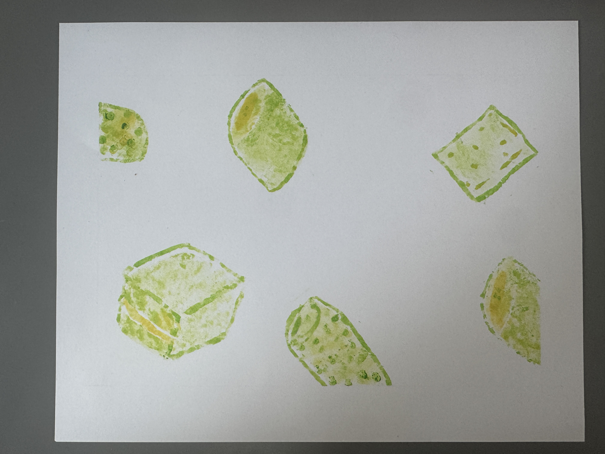
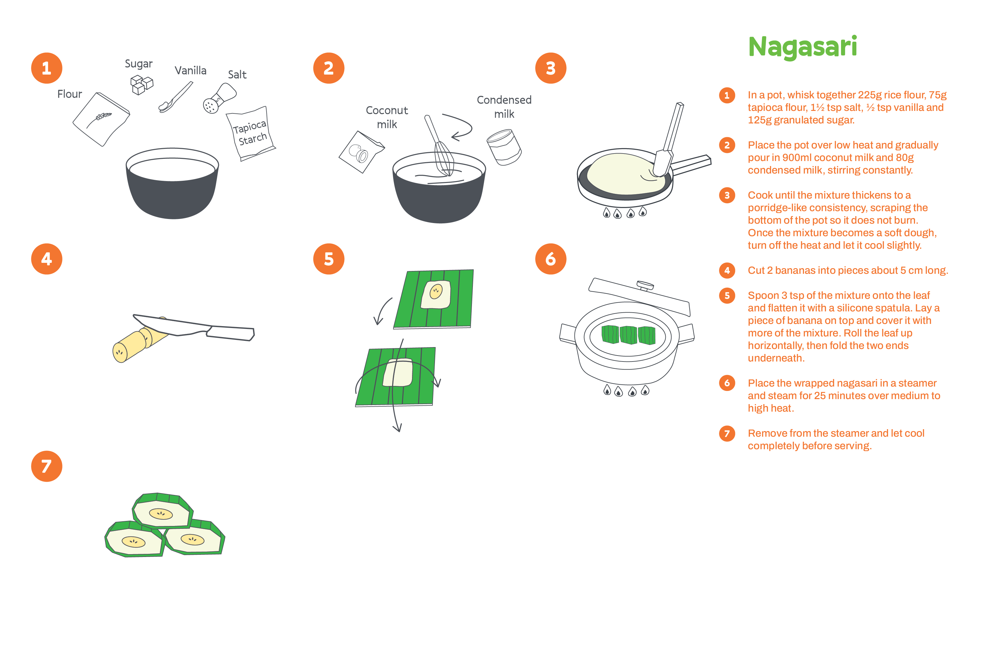

Outcomes


These are the outcomes for the lino prints. I think that they come out pretty good. For the rice grain print on the right, there may be a gay in between; it was intentional. I noticed that the negative-space grain lino stamp is slightly bigger than the grain stamp, so I added an intentional gap between the stamps as a way to connect the white spaces together.


This is the stencil outcome for the stencil prints. There are two perspective groups for the stencil; since it is food, I wanted to play with the arrangement and color of the food. I didn’t want to showcase the food individually because I still want to experiment with colors in my exploration, and I thought the food would be a good idea because people already notice the shape or form of the food. Still, it's just the color that is different.
For the first perspective, I wanted every snack to be centered, and the second perspective would be going out of the box. Each perspective represents four different snacks because I wanted to show the two perspectives. The colors that I used for these prints are different gradients of green and yellow. So even though I'm using one color, the gradient helps to differentiate the details of the snacks.



For the infographics, I added the recipe steps and a numbering system to make it easier for the reader to understand. I also scrapped the idea of making the infographics more than two pages because when I printed out the previous weeks' infographics, I noticed I could size everything down since my illustration doesn’t have many details, and it all fit.
Reflection
Overall, I think I have explored enough for this semester. I think the next step for me is to experiment and explore the ideas that were scrapped during the break. I have also realized that the strongest designs in my work are the prints, so I planned to do more of that during the break.